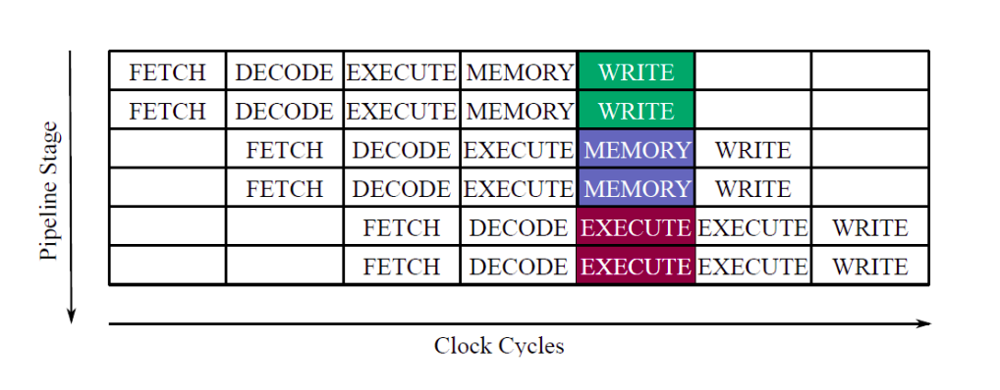
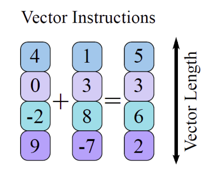
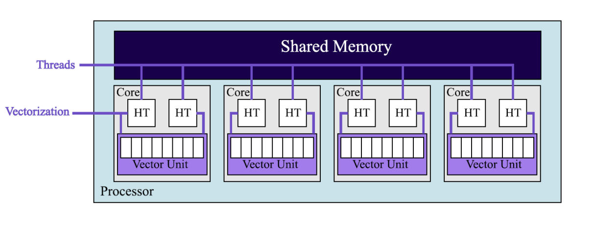
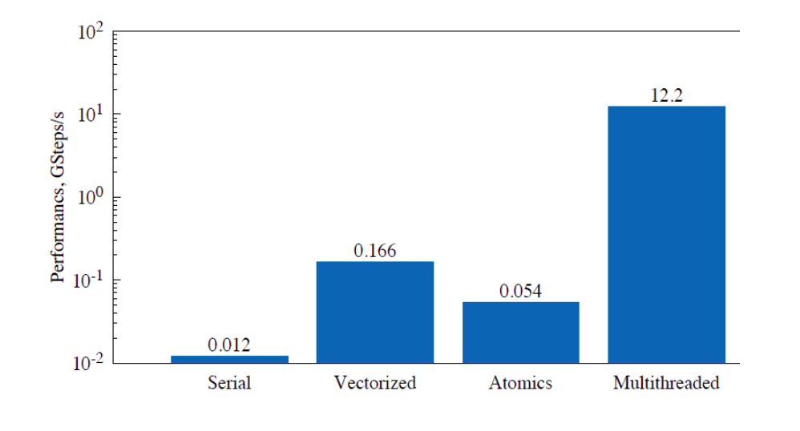
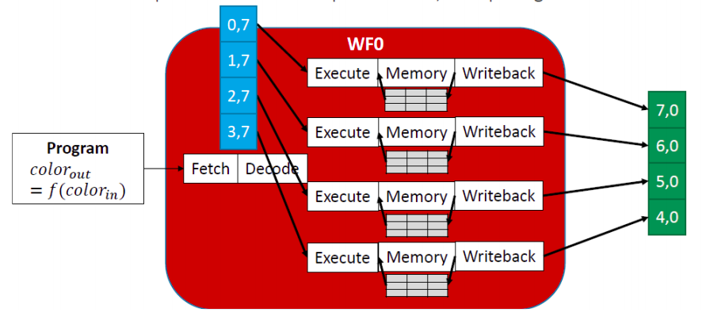
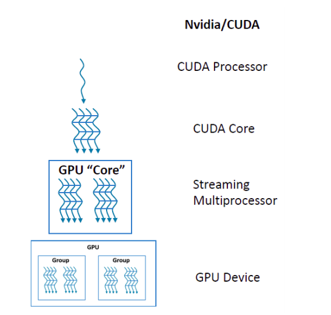
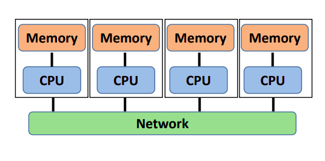

A measure of how many of the instructions in a computer program can be executed simultaneously is called Instruction-level parallelism and a processor that executes this kind of parallelism is called a Superscalar Processor. The problem with the above parallelization is the possibility of conflicts that increases with increase in clock cycles i.e fitting increasingly more instructions together as the pipeline stage continues. Moreover, automatic search for independendt instructions requires additional resources.
Vectorization can be Automatic when the scalar operation is automatically converted by the processor into a parallel one, and Explicit when the user manually implements vectorization. While the obvious benifit of automatic vectorization is the ease of implementation, it does not always work. Foe example, in the following code auto vectorization will not work because for each element the addition depends on the previous element and so, the operation cannot be split into chunks.
for(int i=1; i < n; i++){
a[i] += a[i-1]
}
for(int i=1; i < n; i++){
a[i] += a[i+1] ;
}
for(int i=1; i < n; i++){
a[i] += a[i - N] ;
}
for(int i=1; i < n; i++){
a[i] += b[i] ;
}
#pragma omp declare simd
double func(double x);
const double dx = a / (double)n ;
double integral = 0.0 ;
#pragma omp simd reduction(+, integral)
for (int i=0; i<n; i++){
const double xip2 = dx * ( (double)i + 0.5) ;
const double dI = func(xip2) * dx ;
integral += dI
}

Thus, all the stuff explained above is happening on one vector unit. Since the memory is shared, all the CPU units have th ability to accees and modify the contents of the same memory. Thus, they don't need external communication as it is implemented implicitly. However, the relevant issue now becomes the synchronization of these processes since the code written is Multi-Threaded.#pragma omp declare simd
double func(double x);
const double dx = a / (double)n ;
double integral = 0.0 ;
#pragma omp parallel for reduction(+: integral)
for (int i=0; i<n; i++){
const double xip2 = dx * ( (double)i + 0.5) ;
const double dI = func(xip2) * dx ;
integral += dI
}


This is called Single Instruction Multiple Thread (SIMT) approach.
TODO: CUDA Kernel Docuemntation
1. MPI_Init : Initialize
2. MPI_Finalize : Terminate :
3. MPI_Comm_size : Determines the number of processes
4. MPI_Comm_rank : Determines the label of calling process
5. MPI_Send : Sends an unbuffered/blocking message
6. MPI_Recv : Receives an unbuffered/blocking message.
1. int MPI_Init(int *argc, char ***argv)
2. int MPI_Finalize()
3. int MPI_Comm_size(MPI_Comm comm, int *size)
4. int MPI_Comm_rank(MPI_Comm comm, int *rank
5. int MPI_Send(void *buf, int count, MPI_Datatype datatype,int dest, int tag, MPI_Comm comm)
6. int MPI_Recv(void *buf, int count, MPI_Datatype datatype, int source, int tag, MPI_Comm comm, MPI_Status *status)
1. MPI_Sendrecv : Send and Recieve in one-shot
2. MPI_Bcast : Broadcast same data to all processes in a group
3. MPI_Scatter : Send different pieces of an array to different
processes through partitioning
4. MPI_Gather : Take elements from many processes and gather them
to one single process
1. MPI_Reduce : Takes an array of input elements on each process
and returns an array of output elements to the
root process given a specified operation
2. MPI_Allreduce : Like MPI_Reduce but distribute results to all
processes